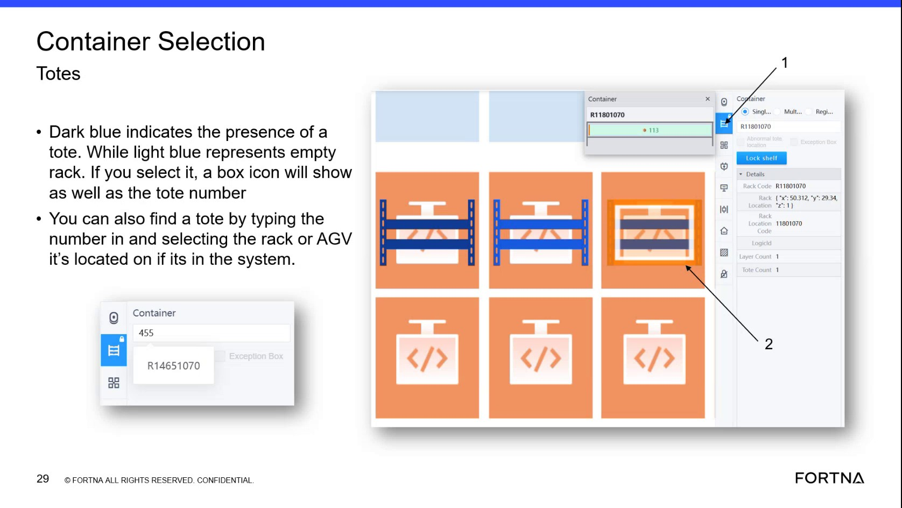

| Procedure ID | proc_find_tote_location_in_rms_by_typing_tote_number_v1 |
|---|---|
| Title | Find a tote location in RMS by typing the tote number in the container section |
| Procedure Type | operation |
| Primary Role | L1_support |
| Support Safe | Yes |
| Capability Tags | device_roster_state |
| Access Surface | rms_ui |
| Audience Roles | L1_support |
| Failure Pattern Tags | None |
| Validation Status | needs_sme_review |
| Merge Status | source_finalized |
Use the RMS / fleet status UI container section tote lookup to enter a tote number and navigate the map to where that tote is currently represented/added in the system.
When you need to locate where a specific tote is in the system so you can navigate the RMS map to that tote’s current location for follow-on recovery actions.

Responsible role: L1_support
Instruction:
In the RMS / fleet status UI (map view), locate the container selection/container section that allows you to look up a tote by typing its tote number.
Expected result:
You are positioned in the RMS container section where a tote number can be entered for lookup.
Responsible role: L1_support
Instruction:
Type the tote number into the tote number search/entry field in the container section.
Expected result:
The tote number is entered into the container section tote lookup field.
Responsible role: L1_support
Instruction:
Submit/confirm the tote number entry (if the UI requires an action) so the map navigates to the tote’s location.
Expected result:
RMS updates the map view in response to the tote lookup submission.
Responsible role: L1_support
Instruction:
Verify the map view moves to the part of the map where that tote is located/has been added.
Expected result:
The RMS map view is positioned at the tote’s represented location (where that tote has been added in the system).
Stop or Escalate If: